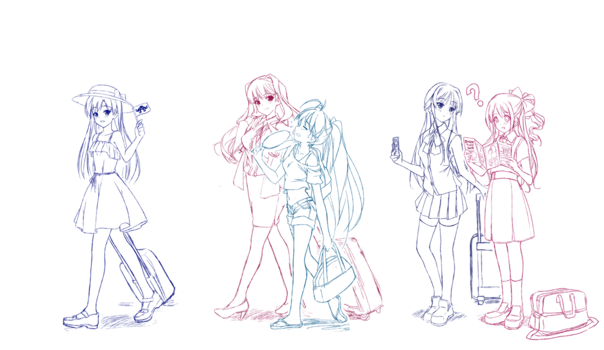

@AFAシンガポール2014公演 特設ファンサイト
DIRECTIONS TO VENUE / 会場アクセス*New! 12/1 (EN・日本語)
CALL BOOK / コールブック *New! 12/1 (EN)*
Introduction | THE IDOLM@STER | READY!! | Onegai! Cinderella | Thank You! | M@STERPIECE
*All information depicted are by a non-profit fan group. This fan group is in no way affiliated to Bandai Namco Games Inc.
Copyright of all names and characters belong to Bandai Namco Games Inc., Mobage, Gree and relevant partners.
illust: ミステア

Copyright of all names and characters belong to Bandai Namco Games Inc., Mobage, Gree and relevant partners.
illust: ミステア